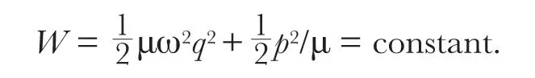
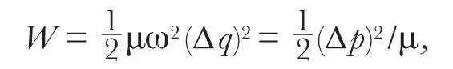
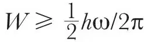
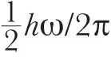

中文
中文R. A. Newing
Editor’s Note
In 1913, Albert Einstein and Otto Stern suggested that measurements of the specific heat of hydrogen gas (a measure of how heat input changes its temperature) at low temperature could best be understood if the energy of the molecular vibrations could never be strictly zero, but had an irreducible residual energy. Theorists subsequently predicted such a residual, later known as the zero-point energy, from the equations of quantum mechanics. But the effect lacked intuitive justification. Here R. A. Newing shows that the zero-point energy can be seen as a consequence of Heisenberg’s uncertainty principle, which forbids complete specification of position or momentum. Newing shows that the minimal possible value for the zero-point energy is consistent with that derived previously from quantum theory. 中文
ACCORDING to quantum mechanics, an oscillator possesses a definite zero-point energy of vibration, and an attempt has been made to express this result directly in terms of some general principle. It has been found that the result may be deduced from the uncertainty principle, in view of the particular relation between position, momentum and energy in a simple harmonic field. 中文
In a state of zero energy the vibrating particle would be at rest at the centre of the field, and its position and momentum would both be known accurately. But this would contradict the uncertainty principle, and the state is therefore not possible. The value of the minimum energy may be calculated from the uncertainty relation ∆p∆q≥h/2π. The linear harmonic oscillator is defined by the energy equation

If we interpret
amplitude of q = ∆q = uncertainty in position,
amplitude of p = ∆p = uncertainty in momentum,
then

giving
μω∆q = ± ∆p.
For real ∆p the positive sign must be taken, and from the uncertainty relation, (∆p)2 ≥ hμω/2π, and therefore

. Taking the equality sign for the least value of the energy, it follows that the zero-point energy is
. 中文
(136, 395; 1935)
R. A. Newing: Department of Applied Mathematics, University, Liverpool, June 22.